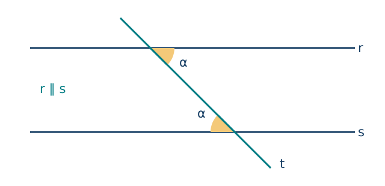
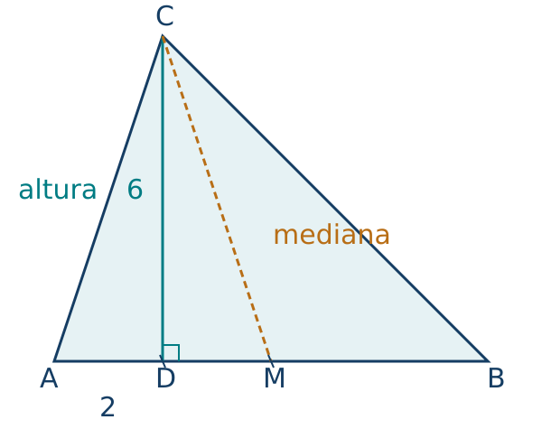
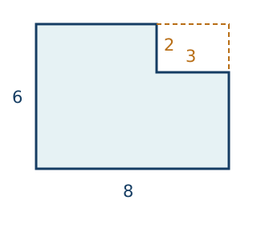
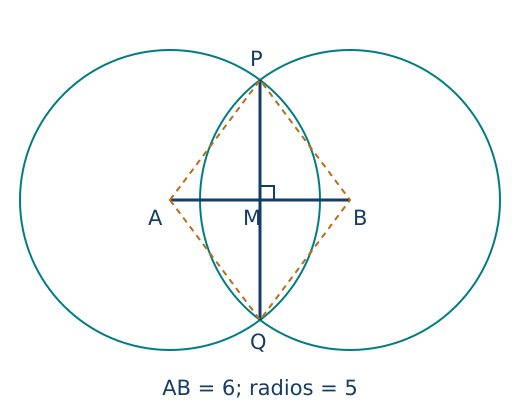

Geometría plana: construcciones y argumentos
← Sucesiones, progresiones y matemática financiera · Índice del libro · Siguiente →
Dibujemos tres puntos sobre una recta y supongamos que conocemos la distancia desde el primero hasta los otros dos. Para obtener la distancia que falta necesitamos saber en qué orden quedaron situados: unas posiciones llevan a sumar y otras a restar. El dibujo puede sugerir un orden, pero será la condición escrita en el problema la que nos permita usarlo en un argumento.
En geometría aprenderemos a hacer explícita esa información mientras construimos y estudiamos figuras. Una marca de ángulo recto, una igualdad de longitudes o una condición de paralelismo se convertirán en recursos para deducir medidas nuevas. Trabajaremos en el plano euclidiano, declarando las propiedades básicas que adoptamos y desarrollando sus consecuencias. Al comenzar con segmentos y ángulos podremos seguir de cerca cómo un dato del enunciado autoriza cada paso, antes de reunirlos en argumentos sobre triángulos y otras figuras.
Lo que sabemos de una figura
Problema 1. Tres puntos sobre una recta
Enunciado. Los puntos \(A,B,C\) están alineados, con \(B\) entre \(A\) y \(C\). Se sabe que \(AC=17\) cm y \(AB=5\) cm. Encuentra \(BC\) y compara las semirrectas de origen \(B\) que pasan por \(A\) y por \(C\).
Solución. La condición «entre» permite sumar longitudes: \(AB+BC=AC\). Así, \(BC=17-5=12\) cm. Las dos semirrectas tienen origen común y sentidos opuestos. Si solo se hubieran dado las dos longitudes, habría que examinar otras posiciones de los puntos; el orden declarado es el que justifica esta resta.
Un punto señala una posición. Una recta se prolonga indefinidamente en sus dos sentidos. El segmento \(AB\) contiene sus extremos y los puntos entre ellos; su longitud \(AB\) es un número no negativo expresado en una unidad. La semirrecta de origen \(A\) que pasa por \(B\) empieza en \(A\) y continúa más allá de \(B\). Dos puntos distintos determinan una recta; una tercera posición exige información adicional.
Trabajaremos en el plano euclidiano. Adoptamos sus reglas básicas de incidencia y orden, la suma de longitudes de segmentos consecutivos y la medida aditiva de ángulos. Por un punto exterior a una recta pasa una única paralela a ella. Usaremos también las reglas de superposición: los movimientos rígidos conservan longitudes y ángulos, y dos triángulos pueden superponerse si coinciden sus tres lados correspondientes, o dos lados y el ángulo comprendido. Estos últimos son los criterios LLL y LAL. Aquí sirven de base explícita para justificar construcciones; el capítulo siguiente estudiará sistemáticamente la congruencia. La geometría de este capítulo depende de esas reglas euclidianas.
Medir un giro y justificar una igualdad
Un ángulo está determinado por dos semirrectas de origen común. Indicamos su vértice con la letra central: \(\angle ABC\) tiene vértice \(B\). Nos ocuparemos de ángulos interiores entre \(0^\circ\) y \(180^\circ\), además del giro completo de \(360^\circ\). Un ángulo recto mide \(90^\circ\); uno llano, \(180^\circ\). Dos rectas perpendiculares forman ángulos rectos. Una bisectriz divide un ángulo en dos de igual medida.
Problema 2. Dos ángulos que completan una línea
Enunciado. Dos ángulos adyacentes forman un ángulo llano y miden \(x+20^\circ\) y \(2x+10^\circ\). Encuentra sus medidas, tomando \(x\) en grados.
Solución. Sus interiores están separados y sus lados exteriores son semirrectas opuestas. La adición de medidas da \((x+20)+(2x+10)=180\). Por tanto, \(3x=150\) y \(x=50\). Los ángulos miden \(70^\circ\) y \(110^\circ\); ambos son positivos y suman \(180^\circ\). Se llaman suplementarios. Dos ángulos que suman \(90^\circ\) se llaman complementarios; estas palabras indican una relación entre medidas y por sí solas no fijan una posición en el dibujo.
Problema 3. Una igualdad en el cruce de dos rectas
Enunciado. Dos ángulos opuestos por el vértice miden \(3x+5^\circ\) y \(5x-35^\circ\). Encuentra las cuatro medidas del cruce.
Solución. Cada uno de esos ángulos completa un ángulo llano con el mismo ángulo vecino. Si sus medidas son \(\alpha,\beta\) y la del vecino es \(\gamma\), entonces \(\alpha+\gamma=180^\circ\) y \(\beta+\gamma=180^\circ\). Restar da \(\alpha=\beta\). Así, \(3x+5=5x-35\), de donde \(x=20\). Los opuestos dados miden \(65^\circ\) y sus dos vecinos miden \(115^\circ\). La vuelta completa suma \(65+115+65+115=360\) grados.
Problema 4. Lo que permite afirmar el paralelismo
Enunciado. Una transversal corta dos rectas paralelas. En una intersección, un ángulo agudo mide \(68^\circ\). Encuentra las medidas de los ocho ángulos formados.
Solución. En la primera intersección, el opuesto también mide \(68^\circ\) y los dos adyacentes miden \(112^\circ\). El paralelismo permite transportar la medida a la posición correspondiente de la segunda intersección; los cuatro ángulos de esta repiten las medidas anteriores. Hay cuatro de \(68^\circ\) y cuatro de \(112^\circ\). Los ángulos alternos internos son iguales y los interiores del mismo lado de la transversal suman \(180^\circ\). Para utilizar esas relaciones necesitamos el dato de que las rectas son paralelas.
La relación de ángulos correspondientes es una forma de expresar el postulado euclidiano de las paralelas. Al trazar por un punto una recta con el mismo ángulo respecto de la transversal, obtenemos la dirección paralela. La unicidad de esa paralela permitirá recorrer el razonamiento en sentido inverso.

Problema 5. Reconocer paralelas a partir de ángulos
Enunciado. Dos rectas cortadas por una transversal forman un par de ángulos alternos internos de \(75^\circ\) cada uno. Justifica que las rectas son paralelas.
Solución. Por la segunda intersección trazamos la paralela a la primera recta. Esta nueva recta debe formar un ángulo alterno interno de \(75^\circ\). En el semiplano indicado, una semirrecta queda determinada por su origen y por ese ángulo con la transversal. Por tanto, coincide con la segunda recta del enunciado. Hemos usado la existencia de una paralela y la determinación de una dirección por un ángulo; así queda justificado el criterio recíproco. Comparar dos ángulos sin identificar sus posiciones no habría permitido esta conclusión.
Propiedades de los ángulos y las paralelas
| Propiedad | Fórmula y condiciones de uso |
|---|---|
| Adición de ángulos | Las medidas se suman cuando los interiores no se solapan y los ángulos componen el ángulo considerado. Es una regla básica de medida. |
| Ángulos suplementarios | Si dos ángulos adyacentes componen uno llano, sus medidas suman \(180^\circ\). |
| Opuestos por el vértice | Son iguales cuando proceden del cruce de dos rectas. |
| Paralelas y transversal | Los correspondientes y los alternos internos son iguales; los interiores del mismo lado suman \(180^\circ\). Se presupone paralelismo. |
| Criterio recíproco | La igualdad de un par de correspondientes o de alternos internos determina paralelismo, con las posiciones correspondientes identificadas. |
Pruebas. Véase «Medida angular y paralelismo euclidiano» en el apéndice; allí se distingue la regla adoptada de sus consecuencias.
Una recta auxiliar organiza los ángulos
Un triángulo tiene tres vértices no alineados y los tres segmentos que los unen. La condición de no alineación impide que el interior desaparezca. Si por uno de sus vértices trazamos una paralela al lado opuesto, los ángulos de los otros dos vértices aparecen junto al primero, como alternos internos. Los tres componen un ángulo llano. Así obtenemos \[\alpha+\beta+\gamma=180^\circ.\] La recta auxiliar convierte tres medidas situadas en lugares diferentes en partes de una misma medida. El paralelismo es el paso que permite reunirlas.
Problema 6. Tres expresiones para un triángulo
Enunciado. Los ángulos interiores de un triángulo miden \(2x\), \(x+30\) y \(3x-30\) grados. Encuentra las medidas.
Solución. La suma exige \(2x+(x+30)+(3x-30)=180\). Entonces \(6x=180\) y \(x=30\). Cada ángulo mide \(60^\circ\). Los tres son positivos y su suma es llana, de modo que las medidas son compatibles con un triángulo euclidiano. La ecuación procede de una propiedad demostrada mediante la paralela auxiliar.
Problema 7. Un ángulo exterior reúne dos interiores
Enunciado. Al prolongar un lado de un triángulo, el ángulo exterior en un vértice mide \(128^\circ\). Uno de los interiores de los otros dos vértices mide \(53^\circ\). Encuentra los dos ángulos interiores restantes.
Solución. El interior adyacente al exterior mide \(180-128=52\) grados. El tercero mide \(180-52-53=75\) grados. También podemos escribir directamente \(128=53+75\): el exterior equivale a la suma de los dos interiores no adyacentes, porque tanto esa suma como el exterior completan \(180^\circ\) con el interior del mismo vértice. Esta identidad vale para el ángulo exterior formado al prolongar un lado.
Problema 8. Cuatro vértices y una diagonal
Enunciado. Un cuadrilátero convexo tiene ángulos interiores de \(3x\), \(2x\), \(x+20\) y \(100\) grados. Encuentra sus medidas.
Solución. Una diagonal interior lo divide en dos triángulos. Sus sumas angulares reúnen exactamente los cuatro ángulos del cuadrilátero, de modo que suman \(360^\circ\). Obtenemos \(3x+2x+x+20+100=360\), luego \(x=40\). Las medidas son \(120^\circ\), \(80^\circ\), \(60^\circ\) y \(100^\circ\); suman 360 y cada una es menor que 180, como exige la convexidad.
Un polígono simple tiene una frontera cerrada formada por segmentos que solo se encuentran en extremos consecutivos. Consideraremos polígonos con interior y sin tres vértices consecutivos alineados. Es convexo si el segmento que une dos puntos cualesquiera de su región permanece en ella. En un polígono convexo de \(n\ge3\) lados, las diagonales desde un vértice lo dividen en \(n-2\) triángulos sin solapar interiores. Por tanto, su suma angular es \((n-2)180^\circ\). Un polígono regular tiene todos sus lados y todos sus ángulos iguales.
Problema 9. Reconstruir el número de lados
Enunciado. Cada ángulo interior de un polígono convexo regular mide \(150^\circ\). Encuentra su número de lados.
Solución. Si tiene \(n\) lados, la suma de sus ángulos es \(150n\) y también \(180(n-2)\). Igualarlas da \(30n=360\), de donde \(n=12\). El resultado es un entero al menos tres. Cada ángulo exterior mide \(180-150=30\) grados; doce giros de esa medida completan \(360^\circ\).
Problema 10. Una vuelta completa con giros desiguales
Enunciado. Un pentágono convexo tiene ángulos exteriores, tomados todos con el mismo sentido de recorrido, de \(50^\circ\), \(70^\circ\), \(80^\circ\), \(60^\circ\) y \(100^\circ\). Comprueba la suma y decide si es regular.
Solución. Los exteriores suman \(360^\circ\). Sus interiores respectivos son \(130^\circ\), \(110^\circ\), \(100^\circ\), \(120^\circ\) y \(80^\circ\); suman \(540^\circ=3\cdot180^\circ\). La desigualdad de sus ángulos basta para descartar regularidad. La suma exterior de una vuelta se cumple en cualquier polígono convexo recorrido con giros del mismo sentido; por sí sola deja abiertas las medidas de cada giro y las longitudes de los lados.
Propiedades angulares de triángulos y polígonos
| Propiedad | Fórmula y condiciones de uso |
|---|---|
| Triángulo euclidiano | Los tres ángulos interiores suman \(180^\circ\); los vértices son no alineados. |
| Ángulo exterior de un triángulo | Es igual a la suma de los dos interiores no adyacentes, al prolongar un lado. |
| Polígono convexo | Para \(n\ge3\) lados, la suma interior es \((n-2)180^\circ\). |
| Vuelta exterior | En un polígono convexo, un exterior por vértice y todos con el mismo sentido suman \(360^\circ\). |
| Polígono regular convexo | Cada interior mide \((n-2)180^\circ/n\) y cada exterior \(360^\circ/n\). |
Pruebas. Véase «Triángulos, diagonales y sumas angulares» en el apéndice.
Longitudes que pueden cerrar una figura
Problema 11. Elegir el tercer lado
Enunciado. Dos lados de un triángulo miden 4 cm y 7 cm. ¿Qué valores puede tener el tercero, \(x\)? ¿Cuántos son enteros en centímetros?
Solución. Cualquier lado debe ser menor que la suma de los otros dos. De \(x<4+7\) obtenemos \(x<11\); de \(7<4+x\), \(x>3\). La tercera condición, \(4<7+x\), ya se cumple en ese intervalo. Por tanto, \(3<x<11\). Los valores enteros son 4, 5, 6, 7, 8, 9 y 10: siete posibilidades. En los extremos 3 y 11 los segmentos se alinean y el triángulo pierde su interior. La construcción por intersección de circunferencias permite formar el triángulo para cada valor estrictamente intermedio.
Esta desigualdad triangular estricta expresa que un camino quebrado entre dos puntos, con un vértice fuera de la recta, es más largo que el segmento directo. Adoptamos esta propiedad de la distancia euclidiana. La igualdad corresponde a puntos alineados con el intermedio en el segmento. Para tres longitudes positivas \(a,b,c\), las tres desigualdades se reúnen en \(\lvert a-b\rvert<c<a+b\); estas son también las condiciones para que dos circunferencias de radios \(a,b\), cuyos centros distan \(c\), se corten en dos puntos.
Problema 12. El punto medio y el pie de una perpendicular
Enunciado. Un triángulo tiene base \(AB=8\) cm. El pie \(D\) de la perpendicular desde \(C\) está en la base, a 2 cm de \(A\), y \(CD=6\) cm. Si \(M\) es el punto medio de \(AB\), distingue la mediana \(CM\) y la altura \(CD\), y calcula el área.
Solución. El punto medio cumple \(AM=MB=4\) cm, mientras que \(AD=2\) cm. Por tanto, \(D\) y \(M\) son puntos distintos. La mediana une el vértice con el punto medio del lado opuesto; la altura es perpendicular a la recta de ese lado. En esta figura son segmentos distintos. El área utiliza la altura correspondiente a la base: \(8\cdot6/2=24\) cm². La longitud de la mediana no interviene en esa fórmula. La derivación por duplicación que sigue explicará el factor un medio.

Medir una frontera y medir una región
El perímetro suma las longitudes de la frontera y se expresa en unidades de longitud. El área mide la región y se expresa en unidades cuadradas. Adoptamos que áreas de regiones con interiores separados se suman, que un movimiento rígido conserva el área y que un rectángulo de lados \(b,h>0\) tiene área \(bh\). La última regla parte del conteo de cuadrados y se extiende a longitudes reales por aproximación. Es nuestra normalización de medida; las fórmulas de otras figuras se deducen de ella mediante recortes y duplicaciones.
Problema 13. Dos comparaciones entre área y perímetro
Enunciado. Compara un rectángulo de 6 por 4 cm con un cuadrado de lado 5 cm. Después compara el primer rectángulo con otro de 3 por 8 cm. ¿Qué información determina el perímetro sobre el área?
Solución. El primer rectángulo tiene perímetro \(2(6+4)=20\) cm y área 24 cm². El cuadrado tiene perímetro \(4\cdot5=20\) cm y área 25 cm². Así, un mismo perímetro admite áreas distintas. El rectángulo de 3 por 8 tiene área 24 cm² y perímetro 22 cm, de modo que una misma área también admite perímetros distintos. Cada medida responde a un aspecto de la figura y debe calcularse con sus propios datos.
Problema 14. Recortar una esquina
Enunciado. De un rectángulo de 8 por 6 cm se recorta, en la esquina superior derecha, un rectángulo de 3 por 2 cm con lados paralelos a los originales. Encuentra el área y el perímetro de la región restante.
Solución. El área restante es \(8\cdot6-3\cdot2=42\) cm². Recorremos su frontera: 8 cm abajo, 4 a la derecha, 3 hacia la izquierda en el entrante, 2 hacia arriba, 5 arriba y 6 a la izquierda. La suma es 28 cm. Coincide con el perímetro del rectángulo original: los tramos exteriores retirados, de 3 y 2 cm, se sustituyen por otros de las mismas longitudes en el entrante. Esa coincidencia depende de este recorte de esquina; abrir un entrante en medio de un lado produciría otra frontera.

Un triángulo rectángulo ocupa la mitad del rectángulo construido sobre sus dos lados perpendiculares: una media vuelta produce la otra mitad. En un triángulo cualquiera, trazar la altura permite sumar dos triángulos rectángulos si el pie está dentro de la base, o restar uno de otro si queda fuera. En ambos casos resulta \(bh/2\). Una diagonal divide un paralelogramo en dos triángulos de igual base y altura, de modo que su área es \(bh\). Estas descomposiciones justifican las fórmulas también cuando la figura está muy inclinada.
Problema 15. La altura pertenece a una base concreta
Enunciado. Un triángulo tiene una base de 10 cm, altura correspondiente de 6 cm y uno de sus lados oblicuos de 8 cm. Calcula el área y justifica por qué utilizas esas dos medidas.
Solución. Una copia del triángulo girada media vuelta y colocada junto a él forma un paralelogramo de base 10 y altura 6. El área total de ese paralelogramo es \(10\cdot6=60\) cm²; cada copia ocupa la mitad, 30 cm². La altura mide una distancia perpendicular a la recta de la base. El lado oblicuo de 8 cm tiene otra dirección, por lo que el producto \(10\cdot8/2\) no representa esta área. Para usar ese lado como base haría falta su propia altura perpendicular.
Problema 16. Deslizar un triángulo en un paralelogramo
Enunciado. Un paralelogramo tiene base 9 cm, lado contiguo 5 cm y altura respecto de esa base de 4 cm. Encuentra área y perímetro.
Solución. Un paralelogramo es un cuadrilátero con ambos pares de lados opuestos paralelos. Sus lados opuestos tienen la misma longitud, como se prueba al dividirlo por una diagonal y superponer los triángulos. El perímetro es \(2(9+5)=28\) cm. El recorte del extremo triangular y su traslado al otro extremo forman un rectángulo de base 9 y altura 4; el área es 36 cm². Si el desplazamiento lateral excede la base, podemos efectuar cortes adicionales; la aditividad conserva el mismo producto. La altura da la separación perpendicular entre las rectas paralelas que contienen las bases.
Problema 17. Dos trapecios componen un paralelogramo
Enunciado. Un trapecio convexo tiene bases paralelas de 6 cm y 10 cm, separadas por 4 cm. Encuentra el área.
Solución. Juntamos una copia girada media vuelta por uno de los lados no paralelos. Las dos piezas forman un paralelogramo de base \(6+10=16\) cm y altura 4 cm. Su área es 64 cm²; el trapecio ocupa la mitad, 32 cm². El cálculo se resume en \((6+10)4/2\). La separación perpendicular es común a ambas bases. Usaremos «trapecio» para un cuadrilátero con al menos un par de lados opuestos paralelos; con esta convención los paralelogramos constituyen un caso particular y la fórmula sigue siendo válida.
Propiedades de longitudes y áreas
| Propiedad | Fórmula y condiciones de uso |
|---|---|
| Desigualdad triangular | Para un triángulo no degenerado, \(\lvert a-b\rvert<c<a+b\). Distancias euclidianas positivas; los extremos corresponden a alineación. |
| Perímetro de un polígono | Es la suma de las longitudes de todos los lados de la frontera. Es una definición. |
| Rectángulo y cuadrado | Área \(bh\); para lado \(l\), área \(l^2\) y perímetro \(4l\). La medida rectangular es la normalización adoptada. |
| Paralelogramo | Área \(bh\) y perímetro \(2(a+b)\), con lados contiguos \(a,b\) y altura \(h\) perpendicular a la base \(b\). |
| Triángulo | Área \(bh/2\), con altura perpendicular a la recta de la base, aunque su pie quede fuera del lado. |
| Trapecio | Área \((B+b)h/2\) con bases paralelas \(B,b\) y separación perpendicular \(h\). |
| Descomposición | Áreas de piezas con interiores separados se suman; un recorte contenido se resta. Hay que conservar las unidades cuadradas. |
Pruebas. Véase «Longitudes, superposición y medida de áreas» en el apéndice; se identifican los principios de distancia y medida adoptados.
Construir deja una razón para cada trazo
Con una regla sin graduar podemos trazar la recta por dos puntos, y con el compás una circunferencia de centro y radio dados. Para construir una perpendicular tendremos que combinar esas operaciones de manera que las igualdades de distancias obliguen al ángulo recto buscado. El compás permitirá conservar y trasladar las distancias; las propiedades de superposición justificarán lo que produzcan sus intersecciones. En cada construcción seguiremos los trazos y después explicaremos por qué determinan la figura solicitada.
Problema 18. Una perpendicular que pasa por el punto medio
Enunciado. Construye la mediatriz de un segmento \(AB\) de 6 cm usando regla y compás. Justifica que la recta obtenida es perpendicular a \(AB\) y pasa por su punto medio.
Solución. Con centros \(A\) y \(B\) trazamos circunferencias del mismo radio, por ejemplo 5 cm. Como \(0<6<10\), se cortan en dos puntos \(P,Q\), uno a cada lado de \(AB\). Trazamos la recta \(PQ\). Las igualdades \(AP=BP\), \(AQ=BQ\) y el lado común \(PQ\) permiten superponer los triángulos \(APQ\) y \(BPQ\) por LLL. Por ello, \(PQ\) divide en dos el ángulo \(APB\). Si \(M=PQ\cap AB\), los triángulos \(APM\) y \(BPM\) tienen dos lados iguales y el ángulo comprendido igual; por LAL, \(AM=BM\) y sus ángulos en \(M\) son iguales. Al ser adyacentes sobre \(AB\), cada uno mide \(90^\circ\). Así, \(AM=BM=3\) cm y \(PQ\) es la mediatriz. Las circunferencias de igual radio han producido las igualdades que sostienen la prueba.

Problema 19. Dividir un ángulo en dos partes iguales
Enunciado. Dado un ángulo de \(70^\circ\), construye su bisectriz con regla y compás y determina las medidas resultantes.
Solución. Desde el vértice \(O\), una circunferencia corta los dos lados en \(D,E\), por lo que \(OD=OE\). Con centros \(D,E\) trazamos arcos del mismo radio \(OD\); además de \(O\), se encuentran en un punto \(P\) interior al ángulo. Trazamos la semirrecta \(OP\). Los triángulos \(ODP\) y \(OEP\) tienen \(OD=OE\), \(DP=EP\) y el lado común \(OP\). Por LLL se superponen y sus ángulos en \(O\) son iguales. Como juntos componen el ángulo dado, cada uno mide \(35^\circ\). La construcción parte de un ángulo ya dado; no necesita fabricar previamente setenta grados con regla y compás.
Problema 20. Construir desde tres longitudes
Enunciado. Construye un triángulo con lados 5, 6 y 8 cm. Explica cuántas posiciones puede tener el tercer vértice si fijas el lado de 8 cm.
Solución. Trazamos \(AB=8\) cm. Una circunferencia de centro \(A\) y radio 5 y otra de centro \(B\) y radio 6 determinan el vértice \(C\). Se cortan porque \(\lvert6-5\rvert<8<6+5\). Hay dos intersecciones, una a cada lado de \(AB\). Ambas producen las tres longitudes pedidas y son reflejos respecto de \(AB\). Por LLL representan la misma forma y tamaño; la posición cambia con el semiplano elegido. Si fijamos además que \(C\) esté en uno de esos semiplanos, queda una sola posición.
Problema 21. Cuando los trazos no pueden cerrar
Enunciado. Se proponen triángulos de lados 2, 3 y 5 cm, y de lados 2, 3 y 6 cm. Decide qué ocurre al intentar construirlos.
Solución. Para el primero, \(2+3=5\): las circunferencias con centros separados 5 cm y radios 2 y 3 se tocan en un punto del segmento entre los centros. Los tres vértices quedan alineados y el área es cero. Para el segundo, \(2+3<6\): los radios juntos no alcanzan a salvar la distancia entre los centros y las circunferencias no se cortan. Ninguno produce un triángulo no degenerado. Las desigualdades permiten anticipar el resultado antes de ejecutar los trazos.
Propiedades de las construcciones
| Propiedad | Fórmula y condiciones de uso |
|---|---|
| Mediatriz | Dos circunferencias de igual radio \(r>AB/2\), con \(A\ne B\), determinan dos intersecciones; la recta por ellas es perpendicular a \(AB\) en su punto medio. |
| Bisectriz interior | Para \(0^\circ<\theta<180^\circ\), la construcción por arcos iguales produce una semirrecta que divide el ángulo en dos medidas \(\theta/2\). |
| Tres lados | Para \(a,b,c>0\) con \(\lvert a-b\rvert<c<a+b\), hay dos posiciones del tercer vértice, reflejadas respecto de la base fijada de longitud \(c\). |
| Tangencia y separación | Si \(c=a+b\) o \(c=\lvert a-b\rvert>0\), las circunferencias son tangentes y la figura es degenerada. Fuera del intervalo cerrado no se cortan. Centros coincidentes requieren examen aparte. |
Pruebas. Véase «Mediatrices, bisectrices y construcción de triángulos» en el apéndice.
Qué conserva un movimiento
Podemos mover una figura sobre la página de distintas maneras. Una traslación desplaza todos sus puntos la misma distancia y dirección; un giro los hace rotar alrededor de un centro un ángulo fijo; una reflexión los sitúa al otro lado de un eje, a igual distancia perpendicular. Estos movimientos conservan distancias y ángulos y reciben el nombre de isometrías. Si realizamos varios sucesivamente, cada uno conserva las medidas que recibió del anterior, por lo que también las conserva la composición. Esa posibilidad de transportar una figura permitirá comparar sus partes con las de otra mediante superposición.
Problema 22. Reflejar una figura en una cuadrícula
Enunciado. En una cuadrícula, un triángulo tiene vértices \(A=(1,1)\), \(B=(4,1)\) y \(C=(1,3)\). Refleja la figura respecto del eje vertical de primera coordenada cero y encuentra área y perímetro en comparación con los originales.
Solución. Cada punto queda a la misma altura y pasa a la distancia horizontal opuesta del eje. Los vértices son \(A'=(-1,1)\), \(B'=(-4,1)\) y \(C'=(-1,3)\). Los lados horizontal y vertical miden 3 y 2 unidades; el área es \(3\cdot2/2=3\) unidades cuadradas en ambas figuras. El tercer lado también conserva su longitud, por la reflexión, y por tanto los perímetros son iguales. Podemos concluir esa igualdad sin calcular la longitud del lado oblicuo. Las coordenadas aquí sirven para localizar puntos en la cuadrícula; su estudio métrico se desarrollará más adelante.
Problema 23. Dos reflexiones producen un desplazamiento
Enunciado. Reflejamos primero respecto de un eje vertical de primera coordenada cero y después respecto del eje vertical de primera coordenada tres. Describe el movimiento compuesto.
Solución. Un punto de coordenadas \((x,y)\) pasa primero a \((-x,y)\). La reflexión respecto del segundo eje debe conservar el punto medio de las primeras coordenadas en 3: la nueva coordenada es \(6-(-x)=x+6\). El resultado es \((x+6,y)\), una traslación de seis unidades hacia la derecha. La separación entre ejes es tres; la composición desplaza el doble en la dirección que va del primer eje al segundo. Cada paso conserva distancias y ángulos, y su composición conserva ambas propiedades. Invertir el orden daría el desplazamiento opuesto.
Problema 24. Una conjetura sobre diagonales
Enunciado. Se afirma que todo cuadrilátero cuyas diagonales se cortan en sus puntos medios es un rectángulo. Examina la afirmación mediante los vértices consecutivos \((0,0)\), \((4,0)\), \((5,2)\) y \((1,2)\).
Solución. En una cuadrícula podemos localizar el punto medio promediando cada coordenada. Las diagonales unen \((0,0)\) con \((5,2)\) y \((4,0)\) con \((1,2)\); ambas tienen punto medio \((5/2,1)\). Se cumple la hipótesis. Sin embargo, el lado que va de \((0,0)\) a \((1,2)\) es oblicuo respecto del lado horizontal inferior; una perpendicular al horizontal sería vertical. El ángulo de ese vértice no es recto. Tenemos un paralelogramo que refuta la afirmación. Un rectángulo sí tiene diagonales que se bisecan, pero su recíproco necesita condiciones adicionales. La prueba o el contraejemplo debe referirse a la propiedad que se afirma para todos los casos.
Propiedades de movimientos y cuadriláteros
| Propiedad | Fórmula y condiciones de uso |
|---|---|
| Movimientos rígidos | Traslaciones, giros y reflexiones conservan longitudes, ángulos y áreas, según las reglas euclidianas de superposición y medida adoptadas. |
| Composición | Si cada movimiento conserva una medida, su composición conserva esa medida. |
| Reflexiones en ejes paralelos | Dos reflexiones en ejes separados por \(d>0\) producen una traslación de longitud \(2d\), del primer eje hacia el segundo. |
| Paralelogramo | Sus lados opuestos son iguales y sus diagonales se bisecan. Se presupone que ambos pares de lados opuestos son paralelos. |
| Rectángulo y cuadrado | Un rectángulo tiene cuatro ángulos rectos; un cuadrado es un rectángulo con los cuatro lados iguales. Son definiciones; ser paralelogramo por sí solo no impone ángulos rectos. |
Pruebas. Véase «Movimientos rígidos y argumentos sobre cuadriláteros» en el apéndice.
Ejercicios para trabajar sin profesor
Describe primero las condiciones de la figura. En las cuentas angulares, identifica el teorema que permite escribir cada igualdad. En las áreas, empareja cada base con su altura; en una construcción, explica por qué el trazo tiene la propiedad buscada.
1. \(A,B,C\) están alineados con \(B\) entre los otros dos; \(AC=23\) cm y \(AB=9\) cm. Encuentra \(BC\) y describe las semirrectas de origen \(B\).
2. Dos ángulos adyacentes componen uno llano y miden \(x+10\) y \(3x+10\) grados. Encuentra sus medidas.
3. Dos opuestos por el vértice miden \(2x+15\) y \(4x-25\) grados. Encuentra las cuatro medidas del cruce.
4. Una transversal corta dos paralelas y forma un ángulo agudo de \(74^\circ\). Encuentra las ocho medidas.
5. Dos rectas y una transversal forman alternos internos de \(82^\circ\) cada uno. Justifica el paralelismo.
6. Los ángulos de un triángulo miden \(x\), \(2x\) y \(x+20\) grados. Encuentra las medidas y recuerda dónde interviene el postulado de las paralelas.
7. Un ángulo exterior de un triángulo mide \(137^\circ\) y uno de los interiores no adyacentes mide \(61^\circ\). Encuentra los otros interiores.
8. Un cuadrilátero convexo tiene ángulos \(x\), \(2x\), \(x+40\) y \(80\) grados. Encuentra sus medidas.
9. Cada interior de un polígono regular convexo mide \(156^\circ\). Encuentra su número de lados.
10. Los exteriores de un pentágono convexo, recorridos con el mismo sentido, miden 40, 60, 80, 90 y 90 grados. Comprueba las sumas y examina su regularidad.
11. Dos lados de un triángulo miden 5 y 8 cm. Encuentra el intervalo del tercero y cuenta los valores enteros en centímetros.
12. Una base triangular mide 10 cm, su altura 4 cm y el pie está a 3 cm del extremo izquierdo, dentro de la base. Localiza el punto medio, distingue mediana y altura y calcula el área.
13. Compara un rectángulo de 8 por 2 cm y un cuadrado de lado 5 cm. Después compara ese rectángulo con un cuadrado de lado 4 cm. Examina qué igualdades de perímetro o área se cumplen.
14. De un rectángulo de 10 por 7 cm se recorta la esquina superior derecha de 4 por 3 cm, con lados paralelos a los iniciales. Encuentra área y perímetro restantes.
15. Un triángulo tiene base 12 cm, altura correspondiente 5 cm y un lado oblicuo de 7 cm. Calcula el área y explica qué papel cumple la perpendicularidad.
16. Un paralelogramo tiene base 8 cm, lado contiguo 4 cm y altura correspondiente 3 cm. Encuentra área y perímetro.
17. Un trapecio tiene bases paralelas de 5 y 11 cm y altura 6 cm. Justifica su área por duplicación.
18. Construye la mediatriz de un segmento de 8 cm usando circunferencias de radio 5 cm. Justifica el punto medio y la perpendicularidad.
19. Construye la bisectriz de un ángulo dado de \(80^\circ\) y justifica las medidas obtenidas.
20. Construye un triángulo de lados 4, 7 y 9 cm, fijando la base de 9. Describe las posiciones posibles del tercer vértice.
21. Examina las propuestas de lados 3, 4 y 7 cm, y de lados 3, 4 y 8 cm. Explica el resultado de cada construcción.
22. Refleja respecto del eje vertical de primera coordenada cero el triángulo \((2,1)\), \((6,1)\), \((2,4)\). Compara área y perímetro.
23. Refleja primero respecto del eje vertical de primera coordenada 1 y después respecto del de primera coordenada 5. Encuentra la transformación compuesta y el desplazamiento.
24. Examina la conjetura «si las diagonales se bisecan, el cuadrilátero es rectángulo» con los vértices consecutivos \((0,0)\), \((6,0)\), \((8,3)\) y \((2,3)\).
Soluciones desarrolladas
Ejercicio 1. Usar el orden de los puntos
Como \(B\) está entre \(A\) y \(C\), \(AB+BC=AC\). Así, \(BC=23-9=14\) cm. Las semirrectas desde \(B\) hacia \(A\) y hacia \(C\) son opuestas. La resta utiliza el orden declarado, que también permite reconstruir la posición relativa.
Ejercicio 2. Completar ciento ochenta grados
La suma es \((x+10)+(3x+10)=180\), de donde \(4x=160\) y \(x=40\). Las medidas son \(50^\circ\) y \(130^\circ\), positivas y suplementarias. Los lados exteriores opuestos son los que hacen llano el ángulo total.
Ejercicio 3. Restar un mismo suplemento
Los opuestos por el vértice son iguales porque completan un ángulo llano con un mismo vecino. Entonces \(2x+15=4x-25\), luego \(x=20\) y los dos dados miden \(55^\circ\). Los vecinos miden \(125^\circ\). Las cuatro medidas suman \(360^\circ\).
Ejercicio 4. Transportar una medida a la otra intersección
Los opuestos al ángulo dado miden \(74^\circ\) y sus adyacentes, \(106^\circ\). La igualdad de correspondientes en paralelas transporta estas medidas a la otra intersección. En total hay cuatro ángulos de \(74^\circ\) y cuatro de \(106^\circ\); cada pareja de interiores del mismo lado suma 180 grados.
Ejercicio 5. Una paralela auxiliar prueba el recíproco
Por la segunda intersección trazamos la paralela a la primera recta. Su alterno interno debe medir \(82^\circ\). En el semiplano indicado, la semirrecta que forma esa medida con la transversal es única. Por tanto, coincide con la segunda recta dada. Queda probado el paralelismo mediante una dirección identificada, con las posiciones angulares fijadas.
Ejercicio 6. Una suma apoyada en paralelas
La suma interior es \(x+2x+x+20=180\). Así, \(x=40\) y los ángulos miden \(40^\circ\), \(80^\circ\) y \(60^\circ\). Son positivos y suman 180. El teorema de la suma se obtiene trazando por un vértice una paralela al lado opuesto y reuniendo tres ángulos mediante alternos internos. Ahí interviene la hipótesis euclidiana.
Ejercicio 7. Separar el interior adyacente y los remotos
El interior junto al exterior mide \(180-137=43\) grados. El otro remoto mide \(137-61=76\) grados, por el teorema del ángulo exterior. Se comprueba \(43+61+76=180\). El exterior se ha formado prolongando un lado del triángulo.
Ejercicio 8. Dividir por una diagonal
La diagonal interior produce dos triángulos, así que la suma es 360 grados. Tenemos \(x+2x+x+40+80=360\), de donde \(x=60\). Las medidas son \(60^\circ\), \(120^\circ\), \(100^\circ\) y \(80^\circ\), todas menores que 180 y con la suma requerida.
Ejercicio 9. Contar los giros de una vuelta
Cada exterior mide \(180-156=24\) grados. Como el polígono es regular convexo, todos esos giros son iguales y suman 360. Por tanto, \(n=360/24=15\). La suma interior verifica \(15\cdot156=2340=13\cdot180\) grados.
Ejercicio 10. Una suma común a figuras distintas
Los exteriores suman \(40+60+80+90+90=360\) grados. Los interiores son 140, 120, 100, 90 y 90 grados y suman 540. Los ángulos desiguales impiden que sea regular. Cumplir la suma de una vuelta conserva una relación global y deja diferentes formas posibles.
Ejercicio 11. Un intervalo abierto de longitudes
Las condiciones son \(x<5+8=13\) y \(x>8-5=3\). Así, \(3<x<13\) cm. Los enteros son del 4 al 12, ambos incluidos: nueve valores. En los extremos las circunferencias serían tangentes y los puntos quedarían alineados; por eso el intervalo es abierto.
Ejercicio 12. Dos puntos distintos de la base
El punto medio está a 5 cm de cada extremo, mientras que el pie de la altura está a 3 cm del izquierdo. La mediana y la altura llegan a puntos distintos. El área utiliza la distancia perpendicular: \(10\cdot4/2=20\) cm². Conocer el punto medio basta para trazar la mediana, pero su longitud no es la altura que figura en este producto.
Ejercicio 13. Dos medidas independientes
El rectángulo de 8 por 2 tiene perímetro 20 cm y área 16 cm². El cuadrado de lado 5 tiene perímetro 20 cm y área 25 cm². Comparten perímetro y difieren en área. El cuadrado de lado 4 tiene área 16 cm² y perímetro 16 cm: comparte área con el rectángulo y difiere en perímetro. Los ejemplos refutan ambas determinaciones automáticas.
Ejercicio 14. Seguir la frontera del recorte
El área es \(10\cdot7-4\cdot3=58\) cm². Los seis lados de la frontera miden 10, 4, 4, 3, 6 y 7 cm; su suma es 34 cm. Retirar una esquina paralela a los lados sustituye dos tramos exteriores por dos interiores de iguales longitudes. El área disminuye y, en este recorte concreto, el perímetro permanece igual al inicial.
Ejercicio 15. Emparejar base y altura
El área es \(12\cdot5/2=30\) cm². Una copia girada forma con el triángulo un paralelogramo de doble área, base 12 y altura 5. La distancia perpendicular permite aplicar esa duplicación; el lado oblicuo de 7 cm no es la altura correspondiente a la base elegida.
Ejercicio 16. El lado y la separación entre bases
El perímetro suma los lados: \(2(8+4)=24\) cm. El área utiliza base y altura: \(8\cdot3=24\) cm², por el recorte y traslado que producen un rectángulo. Los valores numéricos coinciden, pero expresan magnitudes distintas y llevan unidades distintas.
Ejercicio 17. El área de dos copias
Dos trapecios iguales, con uno girado media vuelta, forman un paralelogramo de base \(5+11=16\) cm y altura 6 cm. Su área es 96 cm². Cada trapecio ocupa la mitad, 48 cm². Las dos bases iniciales son paralelas y la altura mide su separación perpendicular.
Ejercicio 18. Igualdades que produce el compás
Las circunferencias de centros \(A,B\), distantes 8 cm, y radio 5 se cortan en dos puntos \(P,Q\), porque \(0<8<10\). La recta \(PQ\) encuentra a \(AB\) en \(M\). Por LLL, los triángulos \(APQ\) y \(BPQ\) se superponen y dan iguales ángulos en \(P\). Entonces \(APM\) y \(BPM\) se superponen por LAL: \(AM=BM=4\) cm y los ángulos adyacentes en \(M\) son iguales. Como suman 180 grados, cada uno mide 90. Esta es la mediatriz buscada.
Ejercicio 19. Dos mitades de un ángulo dado
Una circunferencia de centro en el vértice \(O\) corta los lados en \(D,E\) con \(OD=OE\). Los arcos de centros \(D,E\) y radio común \(OD\) se encuentran, además de \(O\), en el punto interior \(P\). Los triángulos \(ODP,OEP\) tienen sus tres lados correspondientes iguales y se superponen por LLL. Por ello, \(OP\) divide los 80 grados en dos ángulos de 40 grados. El argumento justifica la construcción a partir del ángulo dado.
Ejercicio 20. Dos posiciones reflejadas
Fijamos \(AB=9\) cm y trazamos circunferencias de centros \(A,B\) y radios 4 y 7. Como \(\lvert7-4\rvert<9<7+4\), hay dos intersecciones. Cada una satisface las tres distancias. Son imágenes por reflexión respecto de \(AB\); fijar un semiplano selecciona una sola. LLL garantiza el mismo tamaño y forma de ambos triángulos.
Ejercicio 21. Tangencia y ausencia de intersección
Para 3, 4 y 7, la igualdad \(3+4=7\) produce tangencia exterior: los tres puntos están alineados y el área es cero. Para 3, 4 y 8, la desigualdad \(3+4<8\) deja las circunferencias separadas. Ninguna propuesta satisface la desigualdad triangular estricta, así que ninguna construye un triángulo con interior.
Ejercicio 22. Un reflejo conserva las medidas
Los vértices se convierten en \((-2,1)\), \((-6,1)\) y \((-2,4)\). Se conservan los catetos horizontal y vertical, de 4 y 3 unidades, y el área vale \(4\cdot3/2=6\) unidades cuadradas en ambas figuras. La reflexión conserva también el lado oblicuo; por eso los perímetros son iguales. Este último razonamiento utiliza la isometría y no necesita calcular ese lado.
Ejercicio 23. Dos ejes separados cuatro unidades
Reflejar \((x,y)\) respecto del eje de primera coordenada 1 da \((2-x,y)\). Reflejar después respecto del de primera coordenada 5 da \((10-(2-x),y)=(x+8,y)\). El resultado es una traslación de ocho unidades hacia la derecha, el doble de la separación entre ejes. La composición conserva longitudes y ángulos porque cada uno de los dos pasos los conserva.
Ejercicio 24. Un contraejemplo con punto medio común
Los puntos medios de las diagonales son \(((0+8)/2,(0+3)/2)=(4,3/2)\) y \(((6+2)/2,(0+3)/2)=(4,3/2)\). La hipótesis se cumple. El lado desde \((0,0)\) hasta \((2,3)\) es oblicuo, mientras que la base es horizontal; por ello no forman un ángulo recto. El cuadrilátero es un paralelogramo y no es rectángulo. Un caso que cumple la hipótesis y falla la conclusión basta para refutar la afirmación universal.
Diagnóstico de salida
Una figura puede sugerir una relación; los datos y las propiedades permiten sostenerla. En una cuenta angular, la recta auxiliar reúne ángulos que antes estaban separados. En un área, el recorte explica el producto que calculamos. En una construcción, las igualdades creadas por el compás justifican el trazo. Aprender a reconocer esas razones permite reconstruir un argumento cuando cambia la posición o el aspecto del dibujo.
← Sucesiones, progresiones y matemática financiera · Índice del libro · Siguiente →